原文连接:https://www.cnblogs.com/bushui/p/12008774.html
首先吐槽一下支付宝的官方文档，它只是简单介绍一下开发的流程和参数，而对于新人来说如果只看它的官方文档很多时候是看不懂的，我也是边看文档边网上查资料才把它弄懂。下面我详细介绍支付宝的电脑支付是如何实现
电脑网站支付
第一步：进入官网，在电脑网站支付下载它的demo
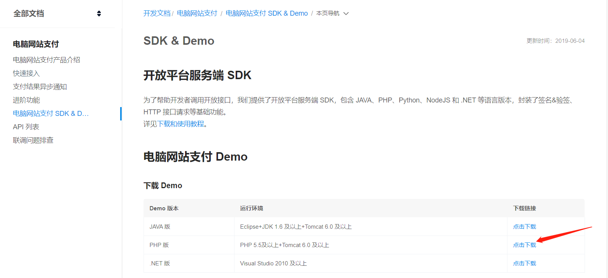
第二步：沙箱环境
想要实现支付宝支付，你要准备一堆东西，对于只想测试的人来说这太麻烦了，而支付宝为我们提供了沙箱环境，这里面有我们开发测试需要的东西
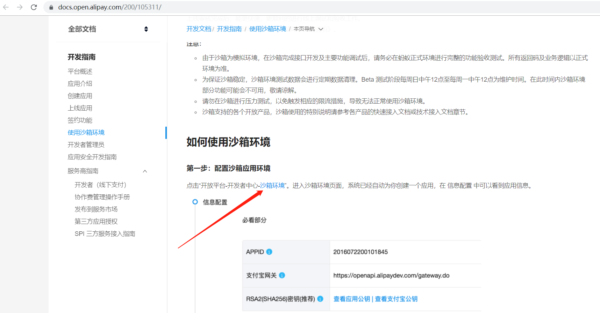
进入沙箱环境，在沙箱应用里下载沙箱钱包(只支持扫一扫、付款码、门店详情页功能，其余功能不提供)，它是用户测试扫码支付用的
第三步：把demo放进项目
一般来说支付宝demo属于扩展文件，所以我把它放到extend目录下
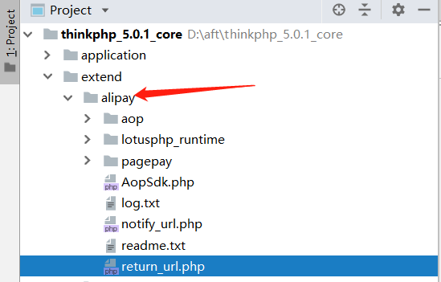
然后把config.php放到application\extra(注：可以不放，我放在里面只是方便调用它配置参数)
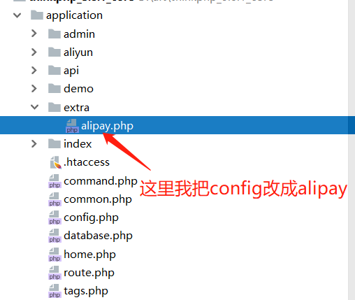
第四步： 填写配置参数
这里的参数在沙箱环境都已经有，你就根据它的注释填写就可以
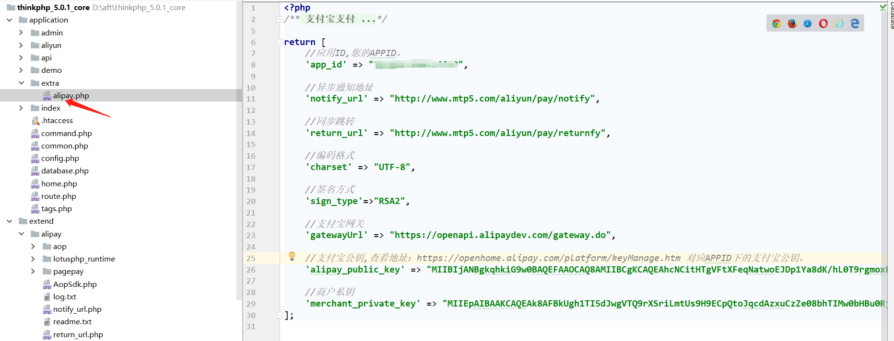
支付宝的公钥和商户私钥，你要下载"支付宝开放平台开发助手"，它可以生成秘钥，然后把应用公钥放在设置里面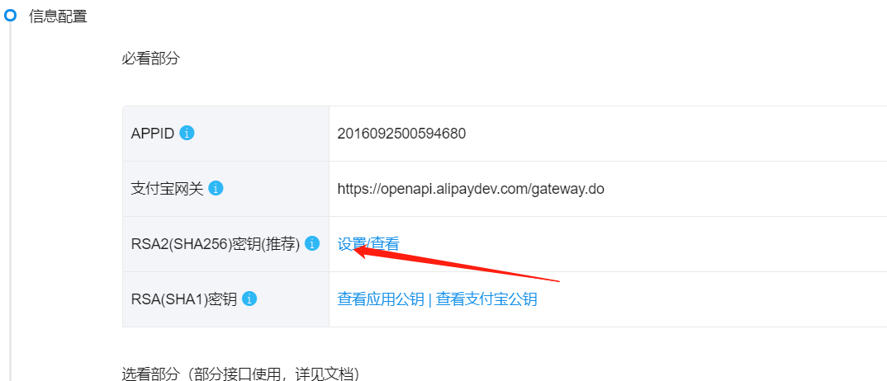
这样他就生成支付宝公钥，你就把它放到alipay的里面的支付宝公钥，而应用私钥直接放到alipay的商户秘钥
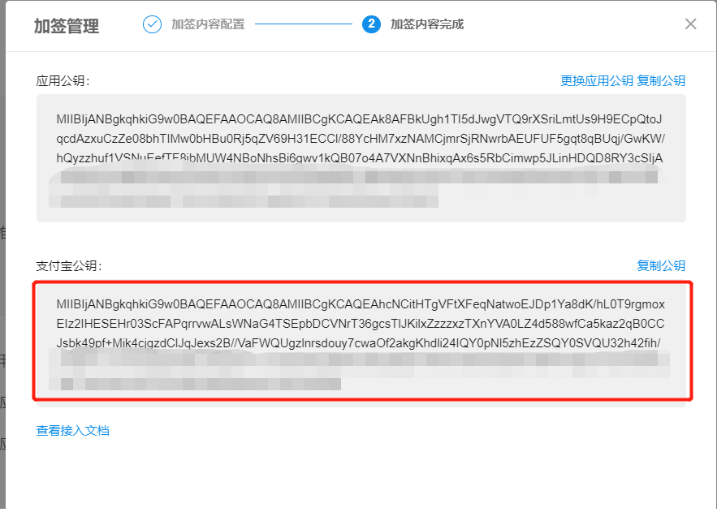
这里我主要说一下同步和异步通知地址，新人肯定不知道是有什么用，大佬略过即可。支付宝支付成功后会执行这两个方法（注：同步是支付宝支付成功要跳转的地址），系统会把你支付的信息用POST方式异步传给你的方法。因为是异步,所以页面是没有变化的，在异步这个方法里可以写你自己的业务逻辑。比如接收值，存入数据库之类。这里有个大坑，坑了我两天，即在异步方法里是没法用session取值的,我原本想用session取用户登录id存入数据库中,后来问了师傅才知道,异步是服务器和服务器之间的交互，所以没有cookieId，没有cookieId当然没有session值。
注意：异步通知程序执行完后必须打印输出“success”（不包含引号）。如果商户反馈给支付宝的字符不是success这7个字符，支付宝服务器会不断重发通知，直到超过24小时22分钟。一般情况下，25小时以内完成8次通知（通知的间隔频率一般是：4m,10m,10m,1h,2h,6h,15h）；
第五步： 调用支付接口
首先我们要修改extend\alipay\pagepay\Pagepay.php，因为直接调用的话会报错：
7.png)
8.png)
<?php
use think\Loader;
Loader::import("alipay.pagepay.service.AlipayTradeService",EXTEND_PATH);
Loader::import('alipay.pagepay.buildermodel.AlipayTradePagePayContentBuilder',EXTEND_PATH);
class Pagepay
{
//支付入口
public static function pay($params)
{
//第一步：校检参数
self::checkParams($params);
//第二步：构造参数
$payRequestBuilder = new AlipayTradePagePayContentBuilder();
$payRequestBuilder->setBody($params['t_body']);//描述
$payRequestBuilder->setSubject($params['trade_name']);//订单名称，必填
$payRequestBuilder->setTotalAmount($params['total_amount']);//付款金额，必填
$payRequestBuilder->setOutTradeNo($params['out_trade_no']);//商户订单号，商户网站订单系统中唯一订单号，必填
//第三步：获取配置
$config = config('alipay');
$aop = new AlipayTradeService($config);
/**
* 第四步：电脑网站支付请求(会自动跳转到支付页面)
* @param $builder 业务参数，使用buildmodel中的对象生成。
* @param $return_url 同步跳转地址，公网可以访问
* @param $notify_url 异步通知地址，公网可以访问
* @return $response 支付宝返回的信息
*/
$aop->pagePay($payRequestBuilder, $config['return_url'], $config['notify_url']);
}
//支付检验
private static function checkParams($params)
{
//商户订单号
if(empty(trim($params['out_trade_no']))){
self::processError("你输入的商户订单号有误！");
}
//订单名称
if(empty(trim($params['trade_name']))){
self::processError("订单名称为空！");
}
//付款金额
if(floatval(trim($params['total_amount'])) <= 0){
self::processError("付款金额有误！！");
}
}
//统一错误处理接口
private static function processError($msg)
{
throw new \think\Exception($msg);
}
}修改完之后我们就可以在控制器里调用支付宝接口：
<?php
namespace app\aliyun\controller;
use think\Controller;
//支付控制器
class Pay extends Controller
{
public function index(){
return $this->fetch();
}
//电脑支付宝接口
public function index2(){
//付款金额
$total_amount = input('WIDtotal_amount');
if($total_amount){
$params = [
//商户订单号，商户网站订单系统中唯一订单号，必填
'out_trade_no' => input('WIDout_trade_no'),
//订单名称，必填
'trade_name' => input('WIDsubject'),
//付款金额，必填
'total_amount' => $total_amount,
//描述
't_body' => input('WIDbody'),
];
import('alipay.pagepay.Pagepay',EXTEND_PATH);
\Pagepay::pay($params);
}
}
//异步通知地址
public function notify_url(){
/* *
*************************页面功能说明*************************
* 创建该页面文件时，请留心该页面文件中无任何HTML代码及空格。
* 该页面不能在本机电脑测试，请到服务器上做测试。请确保外部可以访问该页面。
* 如果没有收到该页面返回的 success 信息，支付宝会在24小时内按一定的时间策略重发通知
*/
import('alipay.pagepay.service.AlipayTradeService',EXTEND_PATH);
$arr = $this->request->param();
$alipaySevice = new \AlipayTradeService(config('alipay'));
$alipaySevice->writeLog(var_export($arr, true));
$result = $alipaySevice->check($arr);
/* 实际验证过程建议商户添加以下校验。
1、商户需要验证该通知数据中的out_trade_no是否为商户系统中创建的订单号，
2、判断total_amount是否确实为该订单的实际金额（即商户订单创建时的金额），
3、校验通知中的seller_id（或者seller_email) 是否为out_trade_no这笔单据的对应的操作方（有的时候，一个商户可能有多个seller_id/seller_email）
4、验证app_id是否为该商户本身。
*/
if ($result) {//验证成功
//商户订单号
$out_trade_no = $arr['out_trade_no'];
//支付宝交易号
$trade_no = $arr['trade_no'];
//交易状态
$trade_status = $arr['trade_status'];
//TRADE_FINISHED：交易完成， TRADE_SUCCESS：支付成功
if ($arr['trade_status'] == 'TRADE_FINISHED' || $arr['trade_status'] == 'TRADE_SUCCESS') {
//做逻辑处理，例如：保存数据
file_put_contents("../extend/sites.txt",implode("，",$arr).PHP_EOL,FILE_APPEND | LOCK_EX);
}
echo "success";
} else {
//验证失败
echo "fail";
}
}
//同步跳转，支付成功,由客户的浏览器触发的一个通知
public function return_url(){
/* *
* 功能：支付宝页面跳转同步通知页面
* 版本：2.0
* 修改日期：2017-05-01
* 说明：
* 以下代码只是为了方便商户测试而提供的样例代码，商户可以根据自己网站的需要，按照技术文档编写,并非一定要使用该代码。
*************************页面功能说明*************************
* 该页面可在本机电脑测试
* 可放入HTML等美化页面的代码、商户业务逻辑程序代码
*/
import('alipay.pagepay.service.AlipayTradeService',EXTEND_PATH);
$arr = $this->request->param();
$alipaySevice = new \AlipayTradeService(config('alipay'));
$result = $alipaySevice->check($arr);
/* 实际验证过程建议商户添加以下校验。
1、商户需要验证该通知数据中的out_trade_no是否为商户系统中创建的订单号，
2、判断total_amount是否确实为该订单的实际金额（即商户订单创建时的金额），
3、校验通知中的seller_id（或者seller_email) 是否为out_trade_no这笔单据的对应的操作方（有的时候，一个商户可能有多个seller_id/seller_email）
4、验证app_id是否为该商户本身。
*/
if ($result) {//验证成功
//做逻辑处理，例如：保存数据
echo "<pre>";
print_r($arr);
//file_put_contents("../extend/sites.txt",implode("，",$arr).PHP_EOL,FILE_APPEND | LOCK_EX);
} else {
//验证失败
echo "验证失败";
}
}
}到了这一步基本就完成了，点击付款就会跳转到这个页面，我们可以使用沙箱钱包扫码支付或登录沙箱账号支付
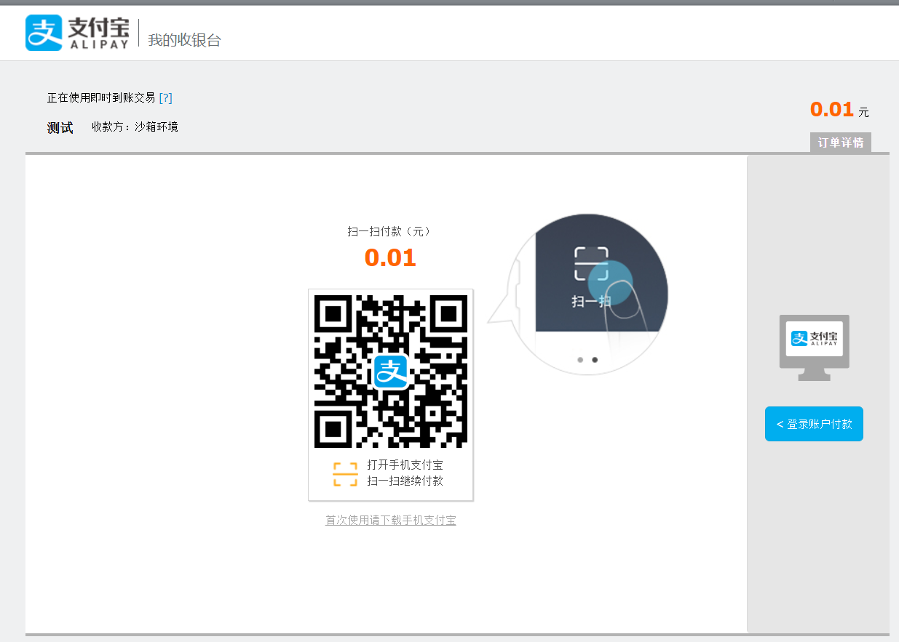
付款遇到的问题及解决方案
如果是新手的第一次接入支付宝接口，或多或少遇到一些问题，今天我就把我遇到的问题作总结
问题一：调试错误，请回到请求来源地，重新发起请求
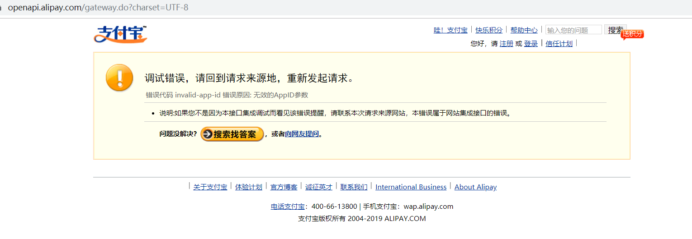
这很有可以就是你得网关有问题，沙箱环境支付宝网关如下：
https://openapi.alipaydev.com/gateway.do没有修改之前demo文件支付宝网关是已经写好，但默认的网关没有加dev，如果你在沙箱环境中必须加上dev
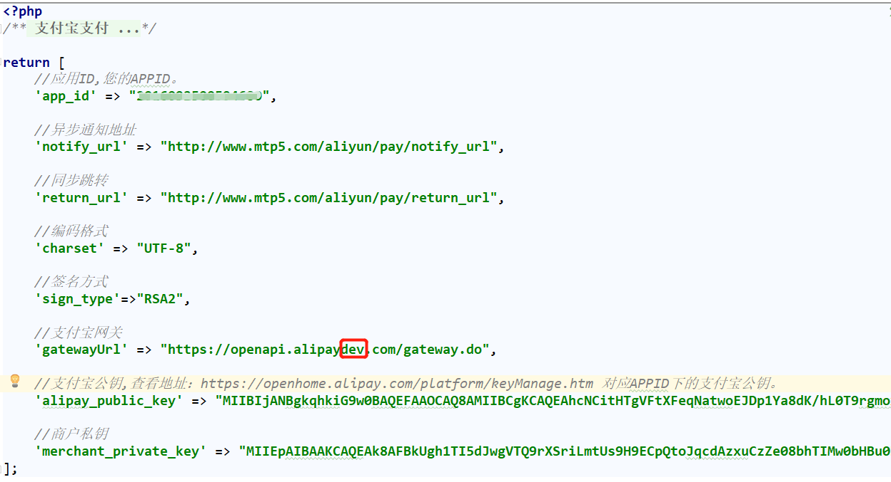
问题二：each()函数报错
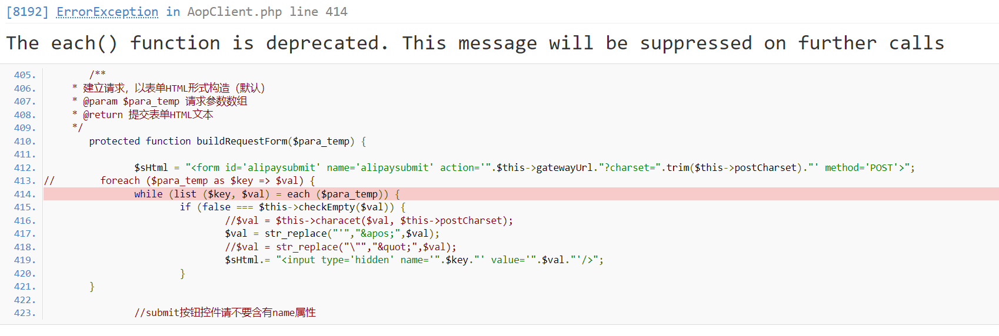
支付宝支付的时候遇到的，因为php7+以上版本抛弃了each函数导致，找到extend\alipay\aop\AopClient.php：
while (list ($key, $val) = each ($para_temp)) {改为
foreach ($para_temp as $key => $val) {问题三：收不到异步通知自查方案-支付宝接口常见错误系列
1.需http://或者https://格式的完整路径
例：https://您的域名/notify_url.php ，支持ip地址方式。（推荐使用域名）
2.不能加?id=123这类自定义参数
错误示例：https://您的域名/notify_url.php？id=123&test=abc
3.必须外网可以正常访问，这个不难理解，在您的异步地址没有代码逻辑的情况下，直接访问应该是一个空白页面并且http状态是200（不支持http200以外的状态），即不能在本机电脑测试，要到服务器上做测试，同时也要确保外部可以访问该页面。
4.不能有重定向 如：http302
5.使用POST方式接收，请确保服务器路由已经开放POST通知
支付宝社区：https://openclub.alipay.com/club/history/read/1314
查询交易记录
修改extend\alipay\pagepay\Query.php，因为直接调用的话会报错：
<?php
use think\Loader;
Loader::import('alipay.pagepay.service.AlipayTradeService',EXTEND_PATH);
Loader::import('alipay.pagepay.buildermodel.AlipayTradeQueryContentBuilder',EXTEND_PATH);
class Query
{
// 商户订单号(out_trade_no) or 支付宝交易号(trade_no) 二选一
const QUERY_TYPE = 'out_trade_no';
public static function exec($query_no)
{
// 1.设置请求参数
$RequestBuilder = new \AlipayTradeQueryContentBuilder();
if (self::QUERY_TYPE == 'trade_no') {
$RequestBuilder->setTradeNo(trim($query_no));
} else {
$RequestBuilder->setOutTradeNo($query_no);
}
// 2.获取配置
$config = config('alipay');
$aop = new \AlipayTradeService($config);
// 3.发起请求
$response = $aop->Query($RequestBuilder);
// 4.转为数组格式返回
$response = json_decode(json_encode($response), true);
// 5.进行结果处理
if (!empty($response['code']) && $response['code'] != '10000') {
self::processError('交易查询接口出错, 错误码: '.$response['code'].' 错误原因: '.$response['sub_msg']);
}
return $response;
}
/**
* 统一错误处理接口
* @param string $msg 错误描述
*/
private static function processError($msg)
{
throw new \think\Exception($msg);
}
}商户订单号和支付宝交易号二选一，控制器这里默认获取商户订单号：
//交易查询
public function query(){
//商户订单号
$trade_no = input('WIDTQout_trade_no');
echo $trade_no;
// return;
if($trade_no){
import('alipay.pagepay.Query',EXTEND_PATH);
$response = \Query::exec($trade_no);
print_r($response);
}
}注意：商户订单号和支付宝交易号不能同时为空。 trade_no、 out_trade_no如果同时存在优先取trade_no
退款
修改extend\alipay\pagepay\Refund.php
<?php
use think\Loader;
Loader::import('alipay.pagepay.service.AlipayTradeService',EXTEND_PATH);
Loader::import('alipay.pagepay.buildermodel.AlipayTradeRefundContentBuilder',EXTEND_PATH);
class Refund
{
/**
* 主入口
* @param array $params 退款参数, 具体如下
* @param string $params['trade_no']/$params['out_trade_no'] 商户订单号或支付宝单号其中之一
* @param string $params['out_request_no'] 商户退款号(可选, 如同一笔交易多次退款, 则必填)
* @param float $params['refund_amount'] 退款金额
*/
public static function exec($params)
{
// 1.校检参数
self::checkParams($params);
// 2.构造请求参数
$RequestBuilder = self::builderParams($params);
// 3.获取配置
$config = config('alipay');
$aop = new \AlipayTradeService($config);
// 4.发送请求
$response = $aop->Refund($RequestBuilder);
// 5.转为数组格式返回
$response = json_decode(json_encode($response), true);
// 6.进行结果处理
if (!empty($response['code']) && $response['code'] != '10000') {
self::processError('交易退款接口出错, 错误码: '.$response['code'].' 错误原因: '.$response['sub_msg']);
}
return $response;
}
/**
* 校检参数
*/
private static function checkParams($params)
{
if (empty($params['trade_no']) && empty($params['out_trade_no'])) {
self::processError('商户订单号(out_trade_no)和支付宝单号(trade_no)不得通知为空');
}
if (floatval(trim($params['refund_amount'])) <= 0) {
self::processError('退款金额(refund_amount)为大于0的数');
}
}
/**
* 构造请求参数
*/
private static function builderParams($params)
{
$RequestBuilder = new \AlipayTradeRefundContentBuilder();
// 1.判断单号类型
if (isset($params['trade_no'])) {
$RequestBuilder->setTradeNo($params['trade_no']);
} else {
$RequestBuilder->setOutTradeNo($params['out_trade_no']);
}
// 2.判断是否部分退款
if (!empty($params['out_request_no'])) {
$RequestBuilder->setOutRequestNo($params['out_request_no']);
}
$RequestBuilder->setRefundAmount($params['refund_amount']);
return $RequestBuilder;
}
/**
* 统一错误处理接口
* @param string $msg 错误描述
*/
private static function processError($msg)
{
throw new \think\Exception($msg);
}
}商户订单号和支付宝交易号二选一，控制器这里默认商户订单号：
//退款
public function refund(){
//付款金额
$total_amount = input('WIDTRrefund_amount');
if($total_amount){
$params = [
//商户订单号，商户网站订单系统中唯一订单号，必填
'out_trade_no' => input('WIDTRout_trade_no'),
//付款金额，必填
'refund_amount' => $total_amount,
//退款单号，如果是部分退款，必填
'out_request_no' => input('WIDTRout_request_no'),
];
import('alipay.pagepay.Refund',EXTEND_PATH);
$res = \Refund::exec($params);
echo "<pre>";
print_r($res);
}
}退款单号(out_request_no)：
1、全额退款不传，部分退款必传
2、out_request_no：标识一次退款请求，同一笔交易多次退款需要保证唯一，如需部分退款，则此参数必传。也可以理解为同一笔交易退款，退款金额小于付款金额是，必须传这个参数，而且同一笔交易分多次退款的话，out_request_no每次传值都不能重复，必须保证唯一性
退款查询
修改extend\alipay\pagepay\RefundQuery.php
<?php
use think\Loader;
Loader::import('alipay.pagepay.service.AlipayTradeService',EXTEND_PATH);
Loader::import('alipay.pagepay.buildermodel.AlipayTradeFastpayRefundQueryContentBuilder',EXTEND_PATH);
class RefundQuery
{
/**
* 主入口
* @param array $params 退款查询参数, 具体如下:
* @param string $params['trade_no']/$params['out_trade_no'] 商户订单号或支付宝单号其中之一
* @param string $params['out_request_no'] 可空, 为空时, 退款号为订单号
*/
public static function exec($params)
{
// 1.校检参数
if (empty($params['trade_no']) && empty($params['out_trade_no'])) {
throw new \think\Exception('商户订单号(out_trade_no)和支付宝单号(trade_no)不得通知为空');
}
// 2.构造请求参数
$RequestBuilder = self::builderParams($params);
// 3.获取配置
$config = config('alipay');
$aop = new \AlipayTradeService($config);
// 4.发起请求
$response = $aop->refundQuery($RequestBuilder);
// 5.转为数组格式返回
$response = json_decode(json_encode($response), true);
// 6.进行结果处理
if (!empty($response['code']) && $response['code'] != '10000') {
self::processError('退款查询接口出错, 错误码为: '.$response['code'].', 错误原因为: '.$response['sub_msg']);
}
return $response;
}
/**
* 构造请求参数
*/
private static function builderParams($params)
{
$RequestBuilder = new \AlipayTradeFastpayRefundQueryContentBuilder();
if (isset($params['trade_no'])) {
$RequestBuilder->setTradeNo($params['trade_no']);
} else {
$RequestBuilder->setOutTradeNo($params['out_trade_no']);
}
// 如果未传退款号, 则以单号为退款号查询
if (isset($params['out_request_no'])) {
$RequestBuilder->setOutRequestNo($params['out_request_no']);
} else {
$out_request_no = isset($params['trade_no']) ? $params['trade_no'] : $params['out_trade_no'];
$RequestBuilder->setOutRequestNo($out_request_no);
}
return $RequestBuilder;
}
/**
* 统一错误处理接口
* @param string $msg 错误描述
*/
private static function processError($msg)
{
throw new \think\Exception($msg);
}
}商户订单号和支付宝交易号二选一，控制器这里默认商户订单号：
//退款查询
public function refundquery(){
//商户订单号
$params['out_trade_no'] = input('WIDRQout_trade_no');
//退款请求号
$params['out_request_no'] = input('WIDRQout_request_no');
if($params['out_trade_no']){
import('alipay.pagepay.RefundQuery',EXTEND_PATH);
$response = \RefundQuery::exec($params);
echo "<pre>";
print_r($response);
}
}注意：退款请求号值(out_request_no)必传，退款时传的值，如果退款时没传则无法查询；商户订单号和支付宝交易号不能同时为空。 trade_no、 out_trade_no如果同时存在优先取trade_no
关闭交易
修改extend\alipay\pagepay\Close.php
<?php
use think\Loader;
Loader::import('alipay.pagepay.service.AlipayTradeService',EXTEND_PATH);
Loader::import('alipay.pagepay.buildermodel.AlipayTradeCloseContentBuilder',EXTEND_PATH);
class Close
{
// 商户订单号(out_trade_no) or 支付宝交易号(trade_no) 二选一
const QUERY_TYPE = 'out_trade_no';
public static function exec($query_no)
{
// 1.构建请求参数
$RequestBuilder = new \AlipayTradeCloseContentBuilder();
if (self::QUERY_TYPE == 'trade_no') {
$RequestBuilder->setTradeNo(trim($query_no));
} else {
$RequestBuilder->setOutTradeNo(trim($query_no));
}
// 2.获取配置
$config = config('alipay');
$aop = new \AlipayTradeService($config);
// 3.发起请求
$response = $aop->Close($RequestBuilder);
// 4.转为数组格式返回
$response = json_decode(json_encode($response), true);
// 5.进行结果处理
if (!empty($response['code']) && $response['code'] != '10000') {
self::processError('交易关闭接口出错, 错误码: '.$response['code'].' 错误原因: '.$response['sub_msg']);
}
return $response;
}
/**
* 统一错误处理接口
* @param string $msg 错误描述
*/
private static function processError($msg)
{
throw new \think\Exception($msg);
}
}商户订单号和支付宝交易号二选一，控制器这里默认商户订单号：
//关闭交易
public function close(){
//商户订单号
$out_trade_no = input('WIDTCout_trade_no');
if($out_trade_no){
import('alipay.pagepay.Close',EXTEND_PATH);
$response = \Close::exec($out_trade_no);
echo "<pre>";
print_r($response);
}
}注意：
1.商户订单号和支付宝交易号不能同时为空。 trade_no、 out_trade_no如果同时存在优先取trade_no
2.交易开始不是在点付款时，而是在扫码付款但没有支付时，这是才可以关闭交易